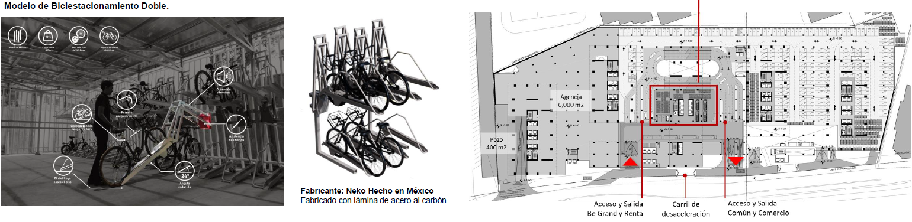
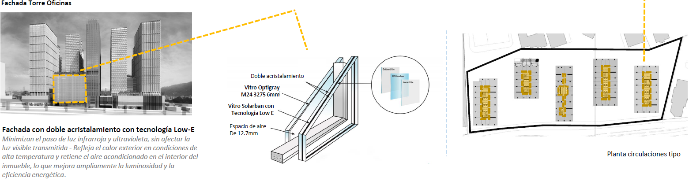
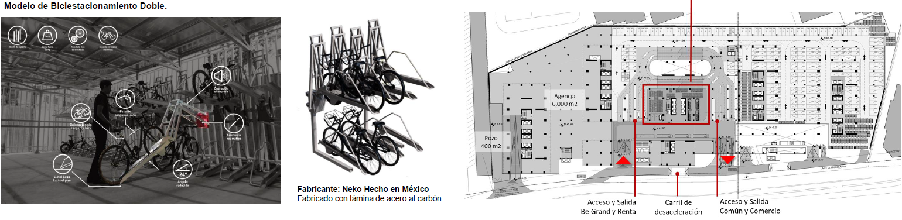
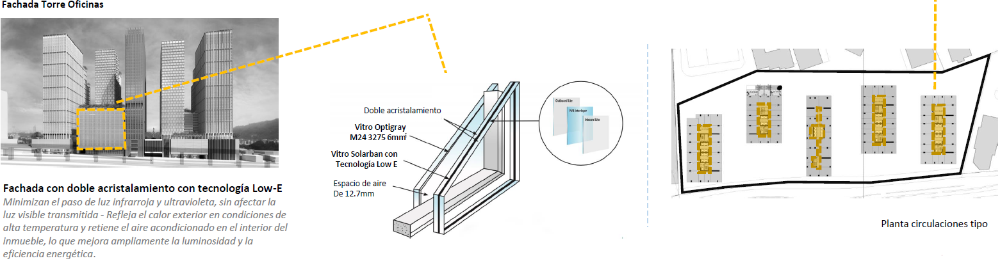

Aire
Aliquam ut ex ut interdum donec amet imperdiet eleifend
Emisión de gases,
partículas y humos
- El proyecto llevará a cabo el riego con agua tratada durante las obras de construcción, para mitigar la
dispersión y emisión de partículas, conforme a los lineamientos de la Norma NADF 018 AMBT 2009.
- En caso de una Precontingencia y contingencia ambiental se suspenderán las obras y actividades del
proyecto
- El proyecto dará cumplimiento a las normas oficiales mexicanas de opacidad de humo y emisión de gases
para los vehículos de carga y transporte de materiales relacionados con obras autorizadas, así como cumplir
con el Programa de verificación vehicular.
Movilidad
- 1,092 bici estacionamientos (Por norma se requieren 910).
- Estamos en proceso de obtención de los permisos correspondientes (Secretaria de Movilidad).

Prevención en la emisión
de niveles de ruido
- Cumplimiento Norma NADF 005 AMBT 2013 en etapa de Construcción Tapiales y Barreras con materiales
acústicos.
- Cumplimiento de la NOM 080 SEMARNAT 1994 para los vehículos de carga que utilicen diésel.
Ahorro de energía
- Celdas fotovoltaicas para el alumbrado de las áreas comunes (pasillos, escaleras) y exteriores + Sensores
- Sistema de calentamiento central + Gas Natural.
El
sistema de calentamiento de agua propuesto es central 90 de eficiencia gracias a este sistema
tenemos
un ahorro del 100 a comparación de un sistema con calentadores normales 40 de eficiencia
Doble
de eficiencia mitad de energía
- Focos y luminarias ahorradoras de energía
- Programa de ahorro de energía, el cual se presentará en la memoria eléctrica.
- Vidrios inteligentes en la torre de oficinas.

- 1,092 bici estacionamientos (Por norma se requieren 910).
- Estamos en proceso de obtención de los permisos correspondientes (Secretaria de Movilidad).

Prevención en la emisión de niveles de ruido
- Cumplimiento Norma NADF 005 AMBT 2013 en etapa de Construcción Tapiales y Barreras con materiales acústicos.
- Cumplimiento de la NOM 080 SEMARNAT 1994 para los vehículos de carga que utilicen diésel.
Ahorro de energía
- Celdas fotovoltaicas para el alumbrado de las áreas comunes (pasillos, escaleras) y exteriores + Sensores
- Sistema de calentamiento central + Gas Natural. El sistema de calentamiento de agua propuesto es central 90 de eficiencia gracias a este sistema tenemos un ahorro del 100 a comparación de un sistema con calentadores normales 40 de eficiencia Doble de eficiencia mitad de energía
- Focos y luminarias ahorradoras de energía
- Programa de ahorro de energía, el cual se presentará en la memoria eléctrica.
- Vidrios inteligentes en la torre de oficinas.
